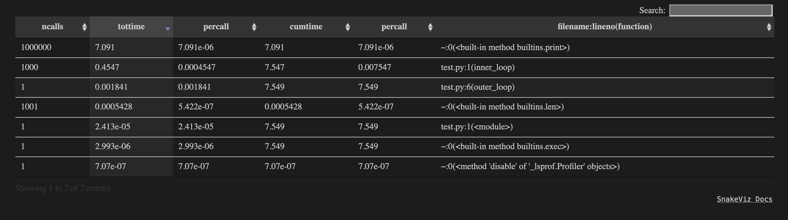
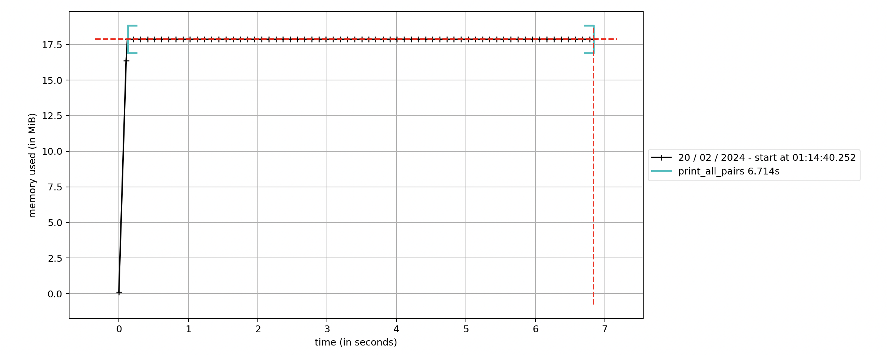
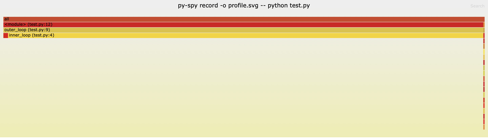
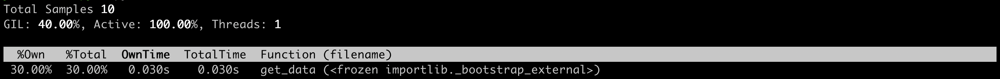

📖 Introduction
These are some notes and code examples about profiling Python; using sensible data structures and algorithms; compiling to machine code; using async methods; and multiprocessing.
Table of Contents:
- ❓ When to Optimise
- 🔎 Profiling
- 🏛️ Data Structures and Algorithms
- ⏳ Async Methods
- 🏭 Multiprocessing in Python
- ⚙️ Compiling Python
Writing a book about making Python faster is a great idea, as performance optimization is crucial in many Python applications, ranging from data analysis to web development. Here are several important topics you might consider covering:
Understanding Python's Execution Model: Overview of the Python interpreter (CPython) and its execution model. The Global Interpreter Lock (GIL) and its implications for multi-threaded applications. Alternative Python interpreters that might offer performance benefits (e.g., PyPy, Jython).
Profiling and Benchmarking: Techniques and tools for profiling Python code to identify bottlenecks (e.g., cProfile, line_profiler). Benchmarking best practices to ensure accurate performance measurements.
Efficient Use of Data Structures:
Understanding built-in data structures (lists, tuples, dictionaries, sets) and their performance characteristics. When and how to use collections from the collections module for efficiency. Algorithm Optimization: Algorithm complexity and its impact on performance. Examples of optimizing common algorithms and data processing patterns. Using NumPy and Pandas for Efficient Data Processing: Leveraging NumPy for efficient numerical computations. Optimizing data manipulation and analysis with Pandas. Concurrency and Parallelism: Threading and multiprocessing in Python: when and how to use them. AsyncIO for asynchronous programming: concepts, event loops, and practical applications. Using concurrent.futures for easy concurrency and parallelism. C Extensions and Cython: Writing C extensions for Python for critical performance paths. Using Cython to compile Python to C for performance gains. Just-In-Time Compilation (JIT): An introduction to JIT compilation and how it can improve Python performance. Practical examples using Numba for JIT compilation in Python. Memory Management and Optimization: Understanding Python's memory management: reference counting and garbage collection. Techniques for reducing memory footprint and avoiding memory leaks. Performance Tips for Web Applications: Optimizing Django or Flask applications for better performance. Caching strategies and when to use them. Tools and Libraries for Performance Enhancement: Overview of libraries and tools specifically designed to improve Python performance (e.g., PyPy, NumPy, Numba). Best Practices and Patterns: General best practices for writing efficient Python code. Common performance anti-patterns and how to avoid them. Each chapter could include real-world examples, case studies, and practical tips that readers can apply to their own Python projects. Additionally, emphasizing the importance of measuring performance improvements and the trade-offs between readability, maintainability, and speed could provide valuable insights for Python developers of all levels.
❓ When to Optimise your Code
In most organisations, programmers live under the paradigm: overall team velocity > individual code optimisation
Some of the tips in this book are general best practice (e.g. avoid pointless iterations in your loops); others require more of a time investment. So before considering any implementation of the latter, ask yourself the following three questions;
- Does the code achieve its objectives?
Can you build a prototype to demonstrate proof-of-concept? Is the code useful? Does it do what it's meant to do? If not, figure this bit out first!
- Is the code robust?
Have you documented what you're doing? Does your code conform to organisational standards? Can other developers easily build on top of it?
- Is it worth further development?
Is this a mission-critical piece of code? Or is it only being run occasionally? Remember the famous quote from Tony Hoare/Donald Knuth: Premature optimisation is the root of all evil
We code to make the world more efficient. But consult this xkcd graphic if in doubt:

Some problems just aren't worth worrying about!
🐍 Python's Execution Model
Before we start considering how to make our code faster, it's worth recapping how Python programs typically work.
CPython is the default and most widely used implementation of the Python programming language. It is written in C and Python, providing a foundation for executing Python programs. CPython compiles Python code into bytecode, which is then executed by the Python virtual machine. The execution model of CPython involves several key components and processes, including parsing, compilation, and interpretation.
Parsing
The Python interpreter first reads your Python code. This stage involves parsing the code into an Abstract Syntax Tree (AST). The AST represents the code's structure in a tree-like form, making it easier for the compiler to understand and manipulate.
Try running the following code, which uses the ast module to parse a simple function into an AST, illustrating what happens at the beginning of the Python code execution process:
import ast
code = """
def greet(name):
return f'Hello, {name}!'
"""
tree = ast.parse(code)
print(ast.dump(tree, indent=4))
Compilation
After parsing, the AST is compiled into bytecode. Bytecode is a low-level, platform-independent representation of your code that can be executed by the Python virtual machine (PVM).
The following code compiles a string of Python code into bytecode and then disassembles it to inspect the bytecode instructions that the Python virtual machine will execute:
import dis
def greet(name):
return f'Hello, {name}!'
# Compile the function into bytecode
compiled_code = compile('greet("World")', '<string>', 'exec')
# Disassemble to see the bytecode
dis.dis(compiled_code)
Python Virtual Machine (PVM)
The Python virtual machine is the runtime engine of CPython. It executes the bytecode produced during the compilation stage. The PVM is an interpreter for the bytecode, going through the instructions one by one and performing the specified operations.
In Conclusion
The execution model of CPython can be summarized as follows:
- Source Code: The Python source code (.py files) is written by the programmer.
- AST: The source code is parsed into an Abstract Syntax Tree, representing the syntactical structure.
- Bytecode Compilation: The AST is compiled into bytecode, a lower-level, platform-independent code.
- PVM Execution: The Python virtual machine executes the bytecode, performing operations as specified.
The efficiency and performance of CPython can be affected by factors such as the complexity of the Python code, the use of built-in functions (which are typically optimized C functions), and the interaction with external modules and libraries.
It's also worth noting that while CPython is the standard and most commonly used Python interpreter, other implementations exist, such as PyPy (which focuses on performance through Just-In-Time compilation) and Jython (which runs on the Java platform). Each implementation has its execution model, optimized for different use cases and performance characteristics.
We'll explore more of these things in subsequent chapters.
🔒 The Global Interpreter Lock
The Global Interpreter Lock (GIL) is a mechanism used in computer languages that have memory management, notably in CPython, the standard Python implementation. The GIL is a mutex that protects access to Python objects, preventing multiple threads from executing Python bytecodes at once. This lock is necessary because CPython's memory management is not thread-safe. The GIL ensures that only one thread runs in the interpreter at any given time, which simplifies the implementation of CPython and prevents potential conflicts between threads. But we'll see how this can have performance implications.
Implications for Multi-threaded Applications
The existence of the GIL has significant implications for developers writing multi-threaded applications in Python:
- Concurrency vs. Parallelism: While the GIL allows for concurrency (multiple threads can be created and managed), it does not allow for true parallelism (multiple threads executing simultaneously) in a single Python process. This means that multi-threaded programs that are CPU-bound may not see a performance improvement; in fact, they might run slower than if they were executed in a single thread due to overhead.
- I/O-bound Applications: For I/O-bound applications (waiting for input/output operations to complete), the GIL has less impact. The GIL is released while waiting for I/O, allowing other threads to run. Therefore, Python's threading module can be an excellent choice for I/O-bound applications.
- Alternative Approaches: To achieve true parallelism, Python developers often use multiprocessing instead of multithreading. The multiprocessing module creates separate Python processes for each task, each with its own Python interpreter and, by extension, its own GIL. This allows tasks to run in parallel on multiple cores.
Some Examples to Try
Example 1: Demonstrating the GIL's Impact on CPU-bound Operations
This example demonstrates how the GIL can limit the performance of CPU-bound multi-threaded programs.
import threading
import time
# A simple CPU-bound function
def cpu_bound_task():
count = 0
while count < 10000000:
count += 1
start_time = time.time()
threads = []
for _ in range(2): # Create 2 threads
thread = threading.Thread(target=cpu_bound_task)
thread.start()
threads.append(thread)
for thread in threads:
thread.join()
end_time = time.time()
print(f"Duration with threads: {end_time - start_time} seconds")
Example 2: I/O-bound Multi-threading
The next example demonstrates how multi-threading can be beneficial for I/O-bound tasks, as the GIL is released during I/O operations, allowing other threads to run.
import threading
import time
# A simple I/O-bound function that waits for some time, simulating an I/O operation
def io_bound_task():
print("Task start")
time.sleep(2) # Simulate an I/O operation
print("Task complete")
start_time = time.time()
threads = []
for _ in range(2): # Create 2 threads
thread = threading.Thread(target=io_bound_task)
thread.start()
threads.append(thread)
for thread in threads:
thread.join()
end_time = time.time()
print(f"Duration with threads: {end_time - start_time} seconds")
In the CPU-bound example, you might not notice a significant performance improvement from using threads due to the GIL. In contrast, the I/O-bound example can benefit from multi-threading, as threads waiting for I/O allow others to run, potentially improving overall efficiency.
🚀 Alternative Python Interpreters
The standard Python interpreter (CPython) sometimes faces criticism for performance issues, especially in comparison to compiled languages. This has led to the development of alternative Python interpreters, each aiming to address specific performance bottlenecks or to integrate Python more seamlessly with different environments. Let's check some of them out!
🏎️ PyPy
PyPy stands out as the most popular alternative Python interpreter, known for its impressive speed improvements over CPython. PyPy achieves its performance through Just-In-Time (JIT) compilation, which compiles Python code into machine code at runtime. This can lead to significant performance gains, especially in long-running applications. However, if you have short but frequently run scripts, the compilation overhead can be a concern.
Features:
- JIT compilation for faster execution.
- Compatibility with Python 2.7 and 3.10 (at time of writing).
- Supports most of the Python standard library and many third-party modules.
When to Use:
PyPy is best suited for long-running applications where the overhead of JIT compilation can be amortized over time. It's particularly beneficial for applications with heavy numerical computations or extensive use of loops (but you may not need it if using NumPy!).
Code Example:
The usage of PyPy is straightforward because it's a drop-in replacement for CPython. First, download it from https://www.pypy.org/
You can run your Python script using PyPy just by using the pypy command instead of python:
pypy script.py
🔗 IronPython
IronPython is an open-source implementation of Python that runs on the .NET Framework and Mono. It is designed to seamlessly integrate with .NET, allowing Python developers to make use of .NET libraries and frameworks. IronPython aims to be a true implementation of Python, while also providing the additional performance and integration capabilities of .NET.
Features:
- Full integration with the .NET Framework, enabling access to a vast library of .NET functionality.
- Allows Python code to interoperate with .NET languages like C# and VB.NET.
- Supports dynamic compilation to .NET bytecode, potentially offering performance benefits on the .NET runtime.
When to Use:
IronPython is ideal for Python developers working in a .NET environment or needing to integrate Python code with .NET applications. It's particularly useful for projects that can benefit from the .NET framework's features, such as Windows-based desktop applications or web services.
Code Example:
Running a Python script with IronPython is similar to using the standard Python interpreter, but you use the ipy command instead.
ipy script.py
To integrate Python code within a C# application using IronPython, you can do something like the following:
var engine = Python.CreateEngine();
var scope = engine.CreateScope();
engine.ExecuteFile("script.py", scope);
☕ Jython
Jython is an implementation of Python designed to run on the Java platform. It compiles Python code to Java bytecode, allowing Python programs to seamlessly integrate with Java modules and libraries. This offers a performance boost in environments where the Java Virtual Machine (JVM) is optimized.
Features:
- Runs on the JVM, allowing integration with Java libraries.
- Access to Java's concurrency features and large ecosystem.
When to Use:
Jython is a great choice when you need to integrate Python code with Java applications or take advantage of Java's rich ecosystem of libraries.
Code Example:
Using Jython typically involves invoking the Jython interpreter to run Python scripts or to integrate Python with Java code.
jython script.py
In Java, you can embed Jython as follows:
PythonInterpreter interpreter = new PythonInterpreter();
interpreter.exec("print('Hello from Jython')");
🌌 GraalPython
GraalPython is part of the GraalVM ecosystem, offering a high-performance Python 3 interpreter. It's designed to execute Python code efficiently by leveraging the GraalVM's advanced JIT compiler. GraalPython aims to support Python 3.8 language features and a wide range of Python libraries, making it an attractive option for running existing Python code at higher speeds.
Features:
- High-performance execution through GraalVM's JIT compilation.
- Compatibility with Python 3.8 features and a broad set of third-party libraries.
- Interoperability with other languages supported by GraalVM, such as JavaScript, Ruby, and R, enabling polyglot applications.
When to Use:
GraalPython is a good choice for projects that require high performance and are running in environments where GraalVM can be used. It's also beneficial for applications that need to interoperate with other programming languages supported by GraalVM, making it ideal for complex, multi-language systems.
Code Example:
Get started here: https://github.com/oracle/graalpython
To run a Python script using GraalPython, you typically use the graalpython command provided by GraalVM.
graalpython script.py
For polyglot applications, you can access Python code from Java like this:
Context context = Context.newBuilder().allowAllAccess(true).build();
context.eval("python", "print('Hello from GraalPython')");
🔥 Cinder
Cinder is Meta's (formerly Facebook's) performance-oriented fork of CPython 3.8. It incorporates several enhancements aimed at improving the performance of Python code, notably in highly concurrent server environments. Cinder is not a standalone interpreter but has contributed some of its features back to the main Python branch, showcasing its influence on the Python ecosystem.
Features:
- Static Python: An experimental, opt-in type system that allows for compiling Python to more efficient code, improving performance.
- Strict Modules: Provides a way to declare modules with stricter performance characteristics, allowing Cinder to optimize these modules more aggressively.
- Performance Enhancements: Includes various optimizations for faster execution of Python code, particularly in the context of web and server applications.
When to Use:
Cinder is tailored for large-scale, performance-sensitive Python applications, especially those running in server environments. It's most beneficial for organizations that can invest in managing a custom Python interpreter to gain execution speed.
Code Example:
You can find installation instructions here: https://github.com/facebookincubator/cinder
While Cinder's usage is similar to standard Python, benefiting from its features often requires adopting specific patterns or annotations in your code, such as using static types:
from static import int64
def fib(n: int64) -> int64:
if n <= 1:
return n
return fib(n-1) + fib(n-2)
Cinder is used similarly to CPython, but with an emphasis on its performance-enhancing features.
🤖 MicroPython
MicroPython is a lean and efficient implementation of Python 3, designed to run on microcontrollers and in constrained environments. Its goal is to be as compatible with standard Python as possible given the hardware limitations, making Python programming accessible for embedded systems development.
Features:
- Compact: Requires minimal resources, running in as little as 256KB of code space and 16KB of RAM.
- Peripheral Access: Includes libraries to access low-level hardware, such as digital and analog I/O, SPI, I2C, and more.
- Interactive Prompt: Offers a Python command line (REPL) on the device for interactive development and debugging.
When to Use:
MicroPython shines in embedded systems and IoT applications where resources are limited. It's ideal for developers looking to leverage Python's ease of use and readability in hardware projects, from hobbyist level to professional embedded systems.
Code Example:
Find download instructions here: https://micropython.org
A simple MicroPython script to blink an LED might look like this:
from machine import Pin
import time
led = Pin(2, Pin.OUT) # Pin 2 is an LED on many boards
while True:
led.on()
time.sleep(0.5)
led.off()
time.sleep(0.5)
This script toggles an LED on and off on a board like the ESP8266 or ESP32, showcasing the simplicity of using Python for hardware programming.
🔎 Profiling Tools
Profiling Python code is crucial for identifying performance bottlenecks and optimizing the execution time of your applications.
Good benchmarking involves measuring the execution time of your code under specific conditions. Here are some best practices:
- Isolate the Code You Want to Benchmark - Make sure that the code you're benchmarking is isolated from setup and teardown operations that you don't intend to measure.
- Choose the Right Tool for the Job - As we'll see,
timeitis great for micro-benchmarks, whilecProfileandline_profilercan help with more detailed profiling. - Warm-up the Python Runtime - Before running your benchmarks, "warm up" the Python interpreter by running your code a few times without measuring it. This process can help mitigate the impact of caching and other optimizations that the interpreter might perform.
- Run Benchmarks Multiple Times - To get a more accurate measure, run your benchmarks multiple times and consider using the average time. This approach helps smooth out any irregularities caused by background processes or other anomalies.
- Consider Systematic Variations - Be aware of external factors that can affect benchmark results, such as other running processes, system load, and hardware differences. Try to minimize these variations when benchmarking.
- Benchmark with Realistic Data - Test your code with data that closely resembles what you expect in production. The performance can greatly differ based on the type, size, and complexity of the input data.
There are several tools and techniques available for profiling, each with its own strengths and use cases. In the next few pages we'll check out some of the most commonly used profiling tools and methods, along with code examples.
🕒 time.time()
The time.time() function from the Python standard library is a straightforward way to measure the elapsed time during code execution. It returns the current time in seconds since the Epoch (January 1, 1970, 00:00:00 UTC). You can use it to calculate how long a piece of code takes to execute by recording the time before and after the execution and then finding the difference.
Usage Example:
import time
start_time = time.time()
# Place the code you want to time here
time.sleep(2) # Example: simple sleep for 2 seconds
end_time = time.time()
elapsed_time = end_time - start_time
print(f"Elapsed time: {elapsed_time} seconds")
This method is very basic and is useful for quick-and-dirty timing without needing to install or use more complex profiling tools.
⏱️ timeit
timeit is a Python module designed to allow Python developers to time small bits of Python code with a minimal influence from the timing mechanism itself. It provides a more accurate timing mechanism than time.time() for small code snippets by taking into account setup code and running the code multiple times to calculate an average time.
Usage Example:
import timeit
code_to_test = """
a = [1, 2, 3]
b = [4, 5, 6]
c = a + b
"""
elapsed_time = timeit.timeit(stmt=code_to_test, number=100000)
print(f"Elapsed time: {elapsed_time} seconds")
The function runs the code snippet specified by the stmt parameter number times and returns the total time taken.
⏲️ Unix's time Command
The Unix time command is used to measure the time taken by a program to execute, providing a simple way to time the execution duration of command-line programs and scripts. This is not a Python-specific tool but can be used with Python scripts or any other executable program.
Usage Example:
To time a Python script named script.py, you would use the time command like so:
time python script.py
This will output something similar to:
real 0m0.123s
user 0m0.084s
sys 0m0.036s
realindicates the total elapsed time (wall clock).usershows the total time spent in user mode.sysrepresents the total time spent in kernel mode.
Using the time command is beneficial for getting a quick overview of the time taken by an entire program or script, including any Python scripts you might be running.
📊 cProfile
cProfile is a built-in profiler that provides a detailed breakdown of how much time your program spends in each function. It's great for getting an overview of which functions are the most time-consuming.
Usage Example:
import cProfile
import re
def example_function():
return re.compile("foo|bar")
if __name__ == "__main__":
cProfile.run('example_function()')
This will output statistics about the time spent in each function, allowing you to identify which parts of your code are the slowest.
🐲 Snakeviz
Snakeviz is a browser-based graphical viewer for the output of Python’s cProfile module.
Usage Example:
Install it with: pip install snakeviz
First, generate a profile file using cProfile:
import cProfile
cProfile.run('example_function()', 'profile_output')
Then, visualize it with Snakeviz:
snakeviz profile_output
This will open up a browser tab with an interactive visualization of your profiling data.
📈 line_profiler
line_profiler is an external tool that goes into more detail than cProfile by showing how much time is spent on each line of your code. This is especially useful for fine-tuning performance by identifying slow lines in functions.
Usage Example:
Install it with: pip install line_profiler
from line_profiler import LineProfiler
def do_some_operations():
[x**2 for x in range(10000)] # Example operation
if __name__ == '__main__':
lp = LineProfiler()
lp_wrapper = lp(do_some_operations)
lp_wrapper()
lp.print_stats()
You need to wrap the function you want to profile and then print the statistics.
🧠 memory_profiler
memory_profiler monitors the memory usage of your application, which can be crucial for identifying memory leaks or functions that use more memory than expected.
Usage Example:
Install it with: pip install memory_profiler
from memory_profiler import profile
@profile
def my_func():
a = [1] * (10**6)
b = [2] * (2 * 10**7)
del b
return a
if __name__ == '__main__':
my_func()
This decorates a function to profile its memory usage line by line.
🕵️♂️ Py-Spy
Py-Spy is a sampling profiler for Python programs that can profile running Python processes without modifying them or needing program restarts.
Usage Example:
Install it with: pip install py-spy
Run it in your terminal:
py-spy top --pid <pid of your python program>
Or to generate a flame graph:
py-spy record --pid <pid of your python program> --output profile.svg
🏗️ Built-in Data Structures
Python provides several built-in data structures that are highly versatile and powerful, enabling developers to store and manipulate data efficiently. These data structures include lists, tuples, dictionaries, and sets, each with its unique features and performance characteristics. They are, in general, lower-level and hence faster than custom data structures.
Choosing the right data structure depends on the specific requirements of your application, including the types of operations you need to perform and their frequency.
Let's check them out!
📝 Lists
Lists are ordered collections of items (elements) that can be of different types. They are mutable, meaning that their elements can be changed, added, or removed.
Performance Characteristics:
- Accessing an element by index is O(1).
- Adding/removing elements at the end is O(1), but inserting/removing elements elsewhere can be O(n) because it may require shifting elements.
- Searching for an element is O(n) because it requires a linear search.
Memory Implications
Lists are dynamic arrays and thus have some overhead for memory allocation to support their mutability and variable size. Each item in a list holds a reference to an object (which could be anything), and there's additional memory overhead for maintaining the size of the list and the pointers to each item.
So the memory usage of a list grows with the number of elements. However, because Python preallocates memory in chunks (to avoid frequent resizing), a list might use more memory than the actual data it stores.
Example:
my_list = [1, 2, 3]
my_list.append(4) # Add an element
my_list[1] = 20 # Modify an element
del my_list[0] # Remove an element
print(my_list) # Output: [20, 3, 4]
🎁 Tuples
Tuples are similar to lists but are immutable, meaning that once a tuple is created, it cannot be modified. This makes tuples a good choice for representing fixed collections of items.
Performance Characteristics:
- Accessing an element by index is O(1).
- Since tuples are immutable, operations like adding or removing elements are not applicable.
- Searching for an element is O(n).
Memory Implications
Tuples are immutable and hence can be optimized by Python's runtime. Since they cannot change in size, Python knows exactly how much memory to allocate at creation time.
Therefore, generally, tuples are more memory-efficient than lists with the same elements because of their immutability and the absence of overhead associated with variable size. However, like lists, each element is a reference to another object, so the overall memory usage depends on what is stored in the tuple.
Example:
my_tuple = (1, 2, 3)
print(my_tuple[1]) # Access an element, Output: 2
🗝️ Dictionaries
Dictionaries are unordered collections of key-value pairs. They allow for fast data lookup by key and are mutable.
Performance Characteristics:
- Access, insertion, and deletion operations are O(1) on average because dictionaries are implemented using hash tables.
- However, in the worst-case scenario (e.g., many key collisions), these operations can degrade to O(n).
Memory Implications
Dictionaries in Python are implemented using hash tables. This means they use a sparse array to provide fast access paths to values based on unique keys. Each entry in the hash table holds the key, the value, and a hash of the key for fast comparison.
This overhead allows for fast access but means that, byte for byte, a dictionary will use more memory than a list or tuple storing the same data. The memory usage becomes more efficient as the dictionary grows larger, but sparse usage (many empty entries) can lead to wasted space.
Example:
my_dict = {'apple': 5, 'banana': 3}
my_dict['cherry'] = 7 # Add a new key-value pair
my_dict['apple'] = 10 # Update an existing key-value pair
del my_dict['banana'] # Remove a key-value pair
print(my_dict) # Output: {'apple': 10, 'cherry': 7}
🎯 Sets
Sets are unordered collections of unique elements. They are mutable and provide efficient ways to perform common set operations like union, intersection, and difference.
Performance Characteristics:
- Like dictionaries, set operations such as adding, removing, and checking for membership are O(1) on average.
Memory Implications
Sets are conceptually similar to dictionaries with only keys and no values. They are also backed by a hash table, providing fast operations for checking membership, adding, and removing elements. They are memory-efficient for operations involving large numbers of elements but might use more memory than lists or tuples for the same number of elements, due to the hash table mechanism.
Example:
my_set = {1, 2, 3}
my_set.add(4) # Add an element
my_set.remove(2) # Remove an element
print(my_set) # Output: {1, 3, 4}
💡 General Tips
- Lists and Tuples: Good for ordered collections of items. Lists are mutable, whereas tuples are immutable.
- Dictionaries: Ideal for associative arrays where key-value pair mappings are needed.
- Sets: Useful for storing unique elements and performing set operations.
General Memory Efficiency Tips
- Use tuples instead of lists for fixed-size collections because tuples have a smaller memory overhead.
- Consider using slots for classes if you're creating many instances of a class. This can significantly reduce the memory overhead by preventing the creation of a dict for each instance, at the cost of flexibility.
- Be mindful of container size and cleanup. Large collections can consume a lot of memory. Removing references to unneeded objects or using data structures with smaller overheads can help manage memory usage.
- Consider using specialized libraries or data structures for large datasets, such as arrays from the array module for homogeneous data or third-party libraries like NumPy, which can be more memory-efficient for certain tasks.
The Collections Module
Algorithm Complexity
Optimising Common Algorithms
NumPy and Pandas
Efficient Numerical Computations
Optimising Data Manipulation
Dask and Polars
Threading and Multiprocessing
Asynchronous Programming
concurrent.futures
C Extensions for Python
Compiling with Cython
Just-in-Time Compilation
Using Numba
Memory Management
Reducing Footprint and Avoiding Leaks
Performant Web Applications
Caching Strategies
General Best Practices
Common Performance Anti-Patterns
🔎 Profiling
It's tempting to just dive into your code and start refactoring at once! But you might end up spending lots of time eeking out tiny performance gains on parts of your code that are already pretty efficient - and completely missing the real bottlenecks.
That's why we start with profiling. Figure out where the problems are - and just how bad they really are. That way, you can make an evidence-based request for more time from management to spend on improving the code.
Here are resources you might want to profile in terms of usage:
- CPU
- Memory
- Network bandwidth
- Disk IO
One other thing to always remember is that profiling can add to the computer workload, and slow things down. But hopefully this is only by a very tiny amount.
In this chapter, we'll explore a variety of profiling methods. There's no universal panacea - it depends on how much time you have and how much granularity you need!
The Simplest Method: time.time() + print
Let's create a simple Python function with a time complexity of O(n2). This is a "CPU-bound" problem.
The function print_all_pairs takes a list of numbers as input and prints out all pairs of numbers from the list. The function generate_random_numbers returns a list of numbers as long as its input, in which all the numbers are between 1 and a 1000. Feel free to run it first, to make sure everything's working.
import random
def print_all_pairs(numbers):
n = len(numbers)
for i in range(n):
for j in range(n):
print(numbers[i], numbers[j])
def generate_random_numbers(length):
return [random.randint(1, 1000) for _ in range(length)]
random_numbers = generate_random_numbers(1000)
print_all_pairs(random_numbers)
Now let's use Python's built-in time module to add some super-simple profiling! This involves adding a few lines of code, commented below
import random
import time # import the time module
... # leave our functions as they are
random_numbers = generate_random_numbers(1000)
start_time = time.time() # start the clock
print_all_pairs(random_numbers)
end_time = time.time() # stop the clock
time_taken = end_time - start_time # calculate the time taken
print(time_taken) # print the result
Be aware that the time_taken will always vary - it's an approximation. Your computer might be doing other more- or less-intensive things, at any given time.
The Unix time Command
If you're on a Unix-like system, you can use the time command! This has several benefits, which we'll explore below.
Now there are actually two possible commands: a shell version (accessed through time) and a system command (accessed through /usr/bin/time). We want the latter.
Again, let's take our original, simplest script, saved as test.py:
import random
def print_all_pairs(numbers):
n = len(numbers)
for i in range(n):
for j in range(n):
print(numbers[i], numbers[j])
def generate_random_numbers(length):
return [random.randint(1, 1000) for _ in range(length)]
random_numbers = generate_random_numbers(1000)
print_all_pairs(random_numbers)
Run it from the command line like this: /usr/bin/time -p --verbose python test.py
The -p flag puts our results on separate lines, which is prettier. You'll get something like this:
real 9.86 # this represents the total time taken
user 2.64 # this is how much time the CPU spent outside kernel functions
sys 1.09 # this is how much time spent on kernel functions
real - user - sys = time spent on IO tasks + any other system tasks.
We can see the advantage of using the Unix time command now: it allows us to strip away "background noise"; it also includes the time taken to load the Python executable, which may be relevant if you're profiling code that spawns lots of processes.
Try adding -l on MacOS or --verbose on Linux for more info. Page faults are worth keeping an eye on - they suggest that you're using RAM and the kernel is resorting to disk access.
The timeit Module: Profiling from the Terminal
We can also use Python's built-in timeit module to test our script from the command line. This helps solve for any CPU fluctuations in our profiling time, by running several loops and iterations.
Let's go back to our original Python script:
import random
def print_all_pairs(numbers):
n = len(numbers)
for i in range(n):
for j in range(n):
print(numbers[i], numbers[j])
def generate_random_numbers(length):
return [random.randint(1, 1000) for _ in range(length)]
Then, in your terminal, you'll want to run the following:
python -m timeit -v -s "import test; random_numbers = test.generate_random_numbers(1000)" "test.print_all_pairs(random_numbers)"
I've included the -v (i.e. --verbose) flag, because I want to see the cumulative time spent, from which I can calculate an average variability. This will output something like:
raw times: 10.8 sec, 9.85 sec, 8.05 sec, 9.03 sec, 10 sec
1 loop, best of 5: 8.05 sec per loop
Pretty consistent! 😎 But timeit seems to have slowed me down vs the decoractor method 😞
Other flags you might want to include are -n (number of loops) and -r (number of repetitions). If you leave this out, timeit will use its defaults.
The %timeit Magic: Profiling in Jupyter
If you're using a Jupyter Notebook, you can do something similar with the %timeit magic. Stick it before what you want to profile:
%timeit print_all_pairs(random_numbers)
N.B. the methodology behind the Python timeit module and the Jupyter %timeit magic is a little different: the former picks the quickest time; the latter gives the mean and standard deviation.
Splitting Function Calls with cProfile
Perhaps you don't want to manage a system of decorator functions, and you just want to see the breakout times for all the functions in your code. cProfile is a built-in tool to help.
It adds some computational overhead, but it helps you profile which parts of your code are being called the most and quantify what time penalty they are incurring.
To demonstrate this utility, let's break our nested loop script into two functions, and remove our use of random to avoid any import overhead, as below:
def inner_loop(numbers, i):
n = len(numbers)
for j in range(n):
print(numbers[i], numbers[j])
def outer_loop(numbers):
n = len(numbers)
for i in range(n):
inner_loop(numbers, i)
numbers = list(range(1, 1001)) # List of numbers from 1 to 1000
outer_loop(numbers)
Now let's run it from the command line, with cProfile:
python -m cProfile -s cumulative test.py
The -s cumulative flag sorts the output by cumulative time spent. It should look something like this:
1002005 function calls in 7.515 seconds
Ordered by: cumulative time
ncalls tottime percall cumtime percall filename:lineno(function)
1 0.000 0.000 7.515 7.515 {built-in method builtins.exec}
1 0.000 0.000 7.515 7.515 test.py:1(<module>)
1 0.002 0.002 7.515 7.515 test.py:6(outer_loop)
1000 0.437 0.000 7.513 0.008 test.py:1(inner_loop)
1000000 7.075 0.000 7.075 0.000 {built-in method builtins.print}
1001 0.001 0.000 0.001 0.000 {built-in method builtins.len}
1 0.000 0.000 0.000 0.000 {method 'disable' of '_lsprof.Profiler' objects}
Makes sense! What's really costing us time is not the loops per se, but all the print statements.
Plotting cProfile with SnakeViz
Everyone loves some pretty pictures! SnakeViz is 'a viewer for Python profiling data that runs as a web application in your browser'. Let's get it from PyPI: pip install snakeviz
To use SnakeViz, you need to have generated an output file (-o) using cProfile. So let's try something like this:
python -m cProfile -o program.prof test.py
snakeviz program.prof
... which will open up the SnakeViz page in your browser. At the top is a waterfall diagram. Here's my hovering over the middle bar, displaying information about the outer_loop function:

At the bottom is a filterable table, allowing you to interact with the conventional cProfile output:

Adding a Decorator Function
Using time.time() and some print statements is a quick-and-dirty way to do some initial profiling. But it can get messy! Using a decorator is both neater and more extendable.
Let's reuse our code from before, but add a decorator method!
import random
import time
from functools import wraps # add this import, so that we can access the decorated functions
# here's our profiler function
def time_profiler(function):
@wraps(function)
def wrapper(*args, **kwargs):
start_time = time.time()
result = function(*args, **kwargs)
end_time = time.time()
execution_time = end_time - start_time
print(f"Function '{function.__name__}' took {execution_time:.6f} seconds to execute.")
return result
return wrapper
@time_profiler # add our decoractor for profiling
def print_all_pairs(numbers):
n = len(numbers)
for i in range(n):
for j in range(n):
print(numbers[i], numbers[j])
def generate_random_numbers(length):
return [random.randint(1, 1000) for _ in range(length)]
random_numbers = generate_random_numbers(1000)
print_all_pairs(random_numbers)
Run this from your terminal and you'll get something like: Function 'print_all_pairs' took 7.186900 seconds to execute.
If we're wanting to profile multiple functions in a more complex piece of code, we can just add the @time_profiler decorator above any of the function names.
Getting Granular with line-profiler
Now we're going to get even more granular, going from script -> function-by-function -> line-by-line! We can use the awesome little tool, line-profiler. It provides way more detail, at the cost of some overhead. We can get it from PyPI: pip install line-profiler.
Let's go back to our original script, with the nested loops:
import random
def print_all_pairs(numbers):
n = len(numbers)
for i in range(n):
for j in range(n):
print(numbers[i], numbers[j])
def generate_random_numbers(length):
return [random.randint(1, 1000) for _ in range(length)]
random_numbers = generate_random_numbers(1000)
print_all_pairs(random_numbers)
We need to add a decorator above our function:
import random
@profile
def print_all_pairs(numbers):
... # same as before
To use line-profiler, we'll run the bundled kernprof CLI script. We include two flags: -l for "line-by-line" and -v for printing the output to the console.
python -m kernprof -lv test.py
And kernprof says...!
Wrote profile results to test.py.lprof
Timer unit: 1e-06 s
Total time: 6.6159 s
File: test.py
Function: print_all_pairs at line 3
Line # Hits Time Per Hit % Time Line Contents
==============================================================
3 @profile
4 def print_all_pairs(numbers):
5 1 2.0 2.0 0.0 n = len(numbers)
6 1001 423.0 0.4 0.0 for i in range(n):
7 1001000 423059.0 0.4 6.4 for j in range(n):
8 1000000 6192419.0 6.2 93.6 print(numbers[i], numbers[j])
I'm starting to think our problem might be all this print-ing 😅😅
Profiling Memory Usage with memory-profiler
No surprises as to what this chapter is about! We'll be using the RAM equivalent of line-profiler, called memory-profiler. But what we want from memory usage is less clear than CPU usage, and a bit of a Goldilock's scenario:
- we may want to reduce RAM usage for greater efficiency
- we may want to increase RAM usage, to save the number of CPU cycles required
I won't go into too much detail here, but in essence: memory allocation is expensive, so sometimes overallocating is better.
Examining your code with memory-profiler adds quite a lot of overhead - to make it run faster, you'll also want to install psutil. For graphs, you'll need matplotlib. So, let's get them all from PyPI: pip install memory-profiler psutil matplotlib
We decorate our script as with line-profiler:
import random
@profile
def print_all_pairs(numbers):
n = len(numbers)
for i in range(n):
for j in range(n):
print(numbers[i], numbers[j])
def generate_random_numbers(length):
return [random.randint(1, 1000) for _ in range(length)]
random_numbers = generate_random_numbers(1000)
print_all_pairs(random_numbers)
To run it, we have two options:
- Getting tabular output from the terminal
To do this, enter this (rather slow...) command:
python -m memory_profiler test.py
This will return a table showing how much RAM is added during the running of the script:
Line # Mem usage Increment Occurrences Line Contents
=============================================================
3 17.977 MiB 17.977 MiB 1 @profile
4 def print_all_pairs(numbers):
5 17.980 MiB 0.004 MiB 1 n = len(numbers)
6 17.984 MiB 0.000 MiB 1001 for i in range(n):
7 17.984 MiB 0.000 MiB 1001000 for j in range(n):
8 17.984 MiB 0.004 MiB 1000000 print(numbers[i], numbers[j])
- Plotting a graph over time
You can use the bundled utility, mprof, for this:
mprof run test.py
mprof plot
Which will plot a graph similar to this:

Profiling on the Fly with Py-Spy
py-spy is another neat little profiling tool to have in your kit. It's used for inspecting pre-spawned processes - so there's no need for running a special workflow. Instead, it's useful for profiling things in production, and it can do this safely because it runs in a separate process.
There various ways to install py-spy. If you're on macOS, you can use Homebrew: brew install py-spy. If you have Rust (which py-spy is programmed in) already installed, you can do: cargo install py-spy. But for now, let's go with our classic: pip install py-spy.
Okay, let's give it a spin! py-spy has three subcommands: record, top, and dump. Let's explore the first two. We're going to go for our split loop function script again:
def inner_loop(numbers, i):
n = len(numbers)
for j in range(n):
print(numbers[i], numbers[j])
def outer_loop(numbers):
n = len(numbers)
for i in range(n):
inner_loop(numbers, i)
numbers = list(range(1, 1001)) # List of numbers from 1 to 1000
outer_loop(numbers)
If we're firing our program up from scratch, you can write something like the following:
py-spy record -o profile.svg -- python test.py
If you're dealing with a process that's in production, you'll need to figure out the Process ID. If you're on a Unix-based system, I recommend pgrep python. Otherwise check Task Manager. Alternatively, use psutil and include this snippet of code at the start of your file:
import psutil
for proc in psutil.process_iter(['pid', 'name']):
if 'python' in proc.info['name']:
print(proc.info['pid'])
This means you can capture the PID when the process first spawns. Then you'll want to use the --pid flag, as follows:
py-spy record -o profile.svg --pid 12345
These will create a 🔥 flame graph 🔥 showing CPU usage!

If you use top, you'll get a tabular output of how the process is doing: py-spy top -- python test.py:

Data Structures and Types
Python comes with several ways of creating, storing, moving, and transforming data:
- Lists
- Tuples
- Sets
- Dictionaries
In addition, people have created libraries with their own data structures, typically for tackling maths/stats/physics data problems, e.g.
- Numpy
- Pandas
- Dask
- Polars
In this section, we'll look at all their various advantages and disadvantages. Picking appropriate data structures for what you are trying to do is a major factor in writing high-performance code. A rule of thumb to remember throughout is that "generic" structures containing multiple data types will tend to incur greater overhead when being manipulated than those of a single type.
We'll also consider how data structures interact with algorithm selection.
Arrays: Tuples (Static) and Lists (Dynamic)
An array is a class of data structure which stores elements in order and contiguously in memory, and provides constant-time access them. This means that, if we know an elements position in the index, we can find it super-quick in O(1). Python has two flavours of array: tuples and lists. We can recognise them by [] vs () respectively.
When an array is created, the computer has to allocate a block of system memory to store it (hence, in some programming languages, arrays are fixed-size). This is "metaphorically" the tuple: a static array with immutable elements. But because tuples are static and immutable, Python can cache them, meaning it can skip out on actually speaking to the kernel for system memory. Python gives us the list as a helpful abstraction to make modifying arrays easier ... at a cost. We call them dynamic arrays.
When to use a tuple vs a list is often dictated by the nature of your data: does it need to change, or is it fixed? But if performance is a concern, it's worth asking the question: can I use a tuple instead of a list? This is because the former require less memory and CPU overhead. Try the timeit profiling method on the initialisation examples below!
# Initializing a list
example_list = [1, 2, 3, 4, 5]
print("Example list:", example_list)
# Initializing a tuple
example_tuple = (1, 2, 3, 4, 5)
print("Example tuple:", example_tuple)
Extending Arrays
Consider this operation:
example_list = [1, 2, 3, 4, 5]
example_list.append(6)
Under the hood, Python has to create a new array to hold the original elements of example_list PLUS the new element. Doing this often would be very expensive: allocating memory is expensive.
In reality, Python sort-of knows this. Rather than creating an array of len(example_list)+1, CPython will assume that some more .append method calls are coming, so it will overallocate approximately 115% percent (following a growth pattern of 0, 4, 8, 16, 25, 35, 46, 58, 72, 88, ...), and then fill it up until it needs to resize again. Still, if you are constantly appending to a list, expect an ongoing memory cost. On the flipside, it's an O(1) operation.
The tuple doesn't let you have this problem, by design! There's no .append(x) ... -ish. You can hack your way around it by adding two tuples together, to create a new tuple. Which is not a in-place operation, and also a slower O(n). 🤦🤦🤦
Finding Things (Sorting and Searching)
This book has an interest in straightforward performant programming. We're not going to go into the depths of comparing sorting algorithms and time complexities. Instead, my recommendation is to make use of Python's built-in methods for lists. The Python team has spent time optimising these.
For instance, list.sort() uses "Timsort", invented by Tim Peters (who also wrote the famous Zen of Python).
import random
random_numbers = [random.randint(1, 1000) for _ in range(100)]
random_numbers.sort()
print("Sorted list using sorted():", sorted_numbers)
print("Sorted list using sort():", random_numbers)
Similarly, take the case of searching for an item, with the aim of returning the index. In Python, you can use the .index() method, which is highly optimised and has a worst case time complexity of O(n). It's only worth implementing something like binary search, which is O(log n), if the list is already sorted, as otherwise you'll be incurring the sorting cost too.
import random
random_numbers = [random.randint(1, 100) for _ in range(100)]
try:
index = random_numbers.index(42)
print("There is a 42 at index", index)
except ValueError:
print("42 is not in the list.")
Ready: Sets, Dictionaries
The order of elements was important in lists and tuples, but what if we don't care about that? As long as every element is unique (or at least the keys are), we can use another two native data structures in Python: sets and dictionaries. The relationship between them can be summarised as follows:
| Sets | Dictionaries | |
|---|---|---|
| Keys | ✅ | ✅ |
| Values | ❌ | ✅ |
I.e. a set is a data structure containing unique elements; a dictionary is a data structure containing unique elements (it's keys), each of which have some associated data (their values).
Let's summarise the pros and cons of sets/dictionaries vs lists/tuples, on average time complexities for operations and needs:
| Sets/Dictionaries | Lists/Tuples | Who Wins? | |
|---|---|---|---|
| Search | O(1) | O(n) | Sets/Dictionaries |
| Membership (x in y) | O(1) | O(n) | Sets/Dictionaries |
| Insertion | O(1) | O(1) | Lists/Tuples (just) |
| Iteration | O(n) | O(n) | Lists/Tuples (just) |
| Sorting | N/A | O(n log n) | Lists/Tuples (obvs) |
| Deletion | O(1) | O(n) | Sets/Dictionaries |
| Memory | More (Hashing) | Less | Lists/Tuples |
Why do sets/dictionaries use more memory? In simple terms, creating one requires an allocation of a block of memory. A hash function then enables the key to be used as an index, allowing for O(1) look-up - just as list[index] is O(1) too. Python does some further optimising under the hood by putting the keys/values into their own array. But still, hash tables are bigger because by nature they contain empty buckets. Also, when a hash table becomes more than 2/3rds full, there's a compute cost of expanding the table (to 3 * len(set)).
One other thing to note is that the O(1)s in the Sets/Dictionaries column can also disguise a potential constant factor - how quick the hashing algorithm is. But in general, sets and dictionaries outperform if you're just wanting to add, check, and delete unique elements from groups. Try running the code below to see what I mean!
import time
# Create our list and set
unique_list = list(range(100000))
unique_set = set(unique_list)
# Let's iterate through the list and perform membership tests
start_time = time.time()
for i in unique_list:
_ = i in unique_list
list_time = time.time() - start_time
print("List lookup time:", list_time)
# Compare this with the set
start_time = time.time()
for i in unique_set:
_ = i in unique_set
set_time = time.time() - start_time
print("Set lookup time:", set_time)
Here were my results 😲
List lookup time: 49.48573088645935
Set lookup time: 0.010624885559082031
A Note about Imports and Namespace Dictionary Look-Ups
It's obvious to avoid unneccesary import statements in your script. It's also faster to be explicit with your imports, due to how Python finds things from its namespaces.
It does dictionary look-ups to find things in this order: locals() -> globals() -> __builtin__ - and stops when it finds what it's looking for.
Hence the results of this code:
import random
from random import randint
def func1(n):
result = 0
for _ in range(n):
result += random.randint(1, 100)
return result
def func2(n):
result = 0
for _ in range(n):
result += randint(1, 100)
return result
def func3(n, randint=random.randint):
result = 0
for _ in range(n):
result += randint(1, 100)
return result
# Testing the functions
print(func1(1000000))
print(func2(1000000))
print(func3(1000000))
Let's use our trusty friend cProfile:
python -m cProfile test.py
Here's the bit of the output we're interested in:
| tottime | function |
|---|---|
| 0.381 | test.py:4(func1) |
| 0.358 | test.py:10(func2) |
| 0.353 | test.py:16(func3) |
Why's this happened? Let's look at the code more closely:
- In func1, we explicitly ask to look at the
randomlibrary, so Python has to go all the way to the builtin map to find what it needs. That requires the most dictionary look-ups, and takes the longest time. - func2 leverages the
from random import randintline so that it can now find therandintfunction inglobals(). But it's still traversing thelocals()map and doing a dictionary look-up. - func3 brings
randintinto thelocals()namespace, minimising Python's search. It looks clunky, but if you're writing code where every millisecond counts...
Let's Get Generating
In this chapter, we'll look at the comprehension, iteration, and evaluation of generators, as a way to lazily evluate and poll loops.
Imagine we want to write a function that takes a integer n as input, and returns a n length list of square numbers, starting from 12.
Here's a naive implementation:
def naive_builder(n):
square_numbers = []
for _ in range(n):
square_numbers.append((_+1)**2)
return square_numbers
The issue is that when n gets big, so will the list square_numbers. We've seen how list.append() has compute overhead as an operation. We're also then going to have a memory-hogging array at the end of it. Great...
But if all we're going to do with this list is subsequently iterate over it, there's a better approach: using a generator function. In the following code, let's implement a naive builder and iterate over its list, and then a generator version. We'll do some time-profiling. Then we'll inspect more closely how the iterator version works.
import math
import time
n = int(input("How many iterations? "))
# This is the naive implementation again
def naive_builder(n):
square_numbers = []
for _ in range(n):
square_numbers.append((_+1)**2)
return square_numbers
# What's changed in our generator function?
def generator_builder(n):
for _ in range(n):
yield (_+1)**2
# Let's iterate over each and time it!
naive_start_time = time.time()
for number in naive_builder(n):
pass # do something
naive_end_time = time.time()
gen_start_time = time.time()
for number in generator_builder(n):
pass # do something
gen_end_time = time.time()
# Calculate time taken
naive_time_taken = naive_end_time - naive_start_time
print("Naive: ", naive_time_taken)
gen_time_taken = gen_end_time - gen_start_time
print("Generator: ", gen_time_taken)
Here's what I got on my machine for running over 100m items - you'll see why generators are so good now!
How many iterations? 100000000
Naive: 26.604732751846313
Generator: 16.16110110282898
That's about a 40% speed improvement. Rather than building a list and then iterating over it to do the actual work, we've just done the actual work by iteratively polling the generator. Such an algorithmic design is called single pass / online.
When to use / not use generators
On the face of it, generators seem great: more speed, less memory usage. But what if you wanted to access the list data more than once? In that case, accepting the one-off cost of creating a list is the better option. Otherwise, you'll be forced to continually re-run the generator, which takes time.
Of course, if you're in a memory-constrained environment, then you might want to disregard this!
Sensible Loop Design
In a second, we'll go on to vector computation, and see why Python's built-in lists aren't great for handling these.
But before that, it's worth looking more closely at the loop construct, and considering two ways in which we can easily optimise our programs. The first of these involves a built-in generator!
def slow_sum_of_squares(numbers):
result = 0
for num in numbers:
result += num ** 2
return result
def fast_sum_of_squares(numbers):
result = sum(num ** 2 for num in numbers)
return result
# Example usage:
numbers = list(range(1, 1000000))
slow_result = slow_sum_of_squares(numbers)
fast_result = fast_sum_of_squares(numbers)
Let's run it from the command line, with our trusty friend cProfile (described back here):
python -m cProfile -s cumulative test.py
You'll see that the fast_sum_of_squares number is astonishingly quick!
Avoiding Unnecessary Calculations
Let's look at an even more explicit and simple example.
Imagine we're collecting money for a charity, and a company has promised to match what's raised. Let's go and collect a million donations, where everyone gives up to $1m (aren't people wonderful). Now we want to know the final amount!
We could:
- multiple every donation by two before adding it to the running total
- add every donation to the running total, and then double it at the end
Obviously the below is a stuipdly inefficient way of calculating, but I was trying to come up with an artificial example to make a point!
import random
def slow_match(donations):
total = 0
for donation in donations:
total += donation * 2
return total
def fast_match(n):
total = 0
for donation in donations:
total += donation
return total * 2
donations = list(random.randint(1, 1000000) for _ in range(1000000))
slow_method = slow_match(donations)
fast_method = fast_match(donations)
Again, run it with cProfile. On my machine, I knock off 30% by using fast_match. Computers are fast, but operations obviously still take time! So you might as well avoid repetitive code when possible.
Above was a trite example. But you may have more complex calculations being reused. There's no need to keep computing and then reallocating the result to a place in memory if it's unchanging.
Numpy: the Solution to Lists
Python's native list structure has a problem for vector operations and matrix manipulations. Lists don't actually hold the data - instead, they hold pointers to the data location. The advantage of this is that the contents of a list can be heterogenous. However, it introduces a fetch/look-up overhead, and if you are doing lots of operations, this fragmentation adds up.
What does this look like in hardware terms? Data needs to be moved from memory to the CPU. Modern computers can have tiered architectures, with DRAM, SRAM, external caches, and on-chip caches. CPUs can also do things like branch prediction, speculation, overlapped instruction fetching, pipelining, and superscalar execution. If you want to get into the weeds, you can use the Linux perf tool to do some profiling, looking for cache-misses (memory bound) and page-faults (disk/network bound). But we might as well be sensible with how we do things.
The Array Module?
Python offers an array module, that overcomes the memory fragementation issue by storing items sequentially. Iterating through an array therefore doesn't require multiple look-ups, as data can be cached (i.e. closer in terms of spatial and temporal locality to the CPU). But then we run into a different issue: Python, as a high-level interpreted language, isn't optimised for vector operations, and isn't good at dealing with the low-level implementation of array.
Enter NumPy
NumPy stores items sequentially in memory AND offers optimised vector operations. It requires orders of magnitude less instructions, and gets more data onto the cache, closer to the CPU. It also has a relatively concise syntax, which can make code cleaner too.
Let's compare generating two million-item lists and doing multitiplication. First, in native Python:
import random
# Generating two vectors of a million items each
vector_a = [random.random() for _ in range(1_000_000)]
vector_b = [random.random() for _ in range(1_000_000)]
# Calculate dot product using a loop
result = 0
for i in range(len(vector_a)):
result += vector_a[i] * vector_b[i]
Here's the equivalent in NumPy:
import numpy as np
# Generating two vectors of a million items each
vector_a = np.random.rand(1_000_000)
vector_b = np.random.rand(1_000_000)
# Perform dot product
result = np.dot(vector_a, vector_b)
On my local machine, the second block of code took 0.025 seconds, versus 0.443 for the native Python. That's almost a 17x speed-up! And the NumPy syntax is much cleaner than a foreloop with array indexing.
Using numexpr
An issue you might face with NumPy is that it processes operations one by one, and stores intermediate results in temporary arrays. numexpr lets you compile a multi-step vector expression into something more efficient. It even supports parallelism.
Let's imagine we want to calculate the following: (a * b) + sqrt(a + b). Here's how we'd do it in NumPy:
import numpy as np
import time
vector_a = np.random.rand(1_000_000)
vector_b = np.random.rand(1_000_000)
result_np = (vector_a * vector_b) + np.sqrt(vector_a + vector_b)
This took a little longer on my machine: 0.028 seconds. To use numexpr, we have to enter the calculation as a string:
import numpy as np
import numexpr as ne
# Generating two vectors of a million items each
vector_a = np.random.rand(1_000_000)
vector_b = np.random.rand(1_000_000)
result_ne = ne.evaluate("(vector_a * vector_b) + sqrt(vector_a + vector_b)")
This was a blazing fast 0.006 seconds, a further 4.7x speedup...
Accelerating Pandas with CPUs and GPUs
If you've done any data work with Python, you'll probably have come across the Pandas DataFrame. It's built on top of NumPy, and is friendly for datasets up to 10GB or so. Beyond this, you need to have lots of RAM!
- Beware of datatypes in Pandas. Numeric columns reference the NumPy data types; strings reference the Python implementation (slower).
- Avoid repeated
.concatmethods, because this requires building lots of new objects. - Filter data before doing compute intensive activities; drop things you don't need.
Modin
This is a drop-in replacement for Pandas which scales to use all your cores:
import pandas as pd
import modin.pandas as pd
cuDF
This enables you to easily augment your code with GPUs (provided they're NVIDIA!). This is Rapids cuDF pandas Accelerator Mode.
If you're using a Jupyter notebook, check out the magic extension: %load_ext cudf.pandas. You can get access to an NVIDIA GPU for free on Colab. It attempts to offload whatever it can onto a GPU, falling back to the CPU with minimal cost if it can't.
Check out an example here: https://colab.research.google.com/drive/1XTKHiIcvyL5nuldx0HSL_dUa8yopzy_Y
Vaex
This lets you tackle bigger datasets (than your RAM can handle) by using lazy evaluation: https://github.com/vaexio/vaex
Dask and Polars
These are two libraries designed to address the shortcomings of Pandas.
Dask
Dask is a flexible parallel computing library for analytics, enabling you to scale up to clusters or down to your laptop. It's particularly well-suited for working with large datasets that don't fit into memory, as it breaks down complex computations into manageable tasks, which are executed in parallel. Dask provides dynamic task scheduling optimized for computation. It's designed to integrate seamlessly with existing Python libraries like NumPy, Pandas, and Scikit-Learn, allowing you to scale those libraries' functionality across multiple cores or machines.
Here's a simple example that demonstrates how to use Dask Array to perform a computation that is automatically parallelized:
import dask.array as da
# Create a large random dask array
x = da.random.random((10000, 10000), chunks=(1000, 1000))
# Compute the mean of the array
mean_result = x.mean().compute()
print(mean_result)
Polars
Polars is a fast DataFrames library implemented in Rust, designed for high performance and efficiency. It's capable of handling large datasets with ease and speed, focusing on lazy computations for optimal performance. Polars leverages Rust's memory safety and speed, bringing efficient data processing capabilities to Python. It's especially good for tasks involving large datasets that require high-speed manipulation, filtering, and aggregation.
Polars operates with both eager and lazy evaluation. The lazy evaluation allows for more optimized computations by building a computation graph and optimizing it before execution, which can lead to significant performance improvements.
It's largely recreated the Pandas API, for ease-of-transition:
import polars as pl
# Read a CSV file into a Polars DataFrame
df = pl.read_csv("your_data.csv")
# Select columns and compute the mean of a column
mean_value = df.select([
pl.col("your_column_name").mean()
])
print(mean_value)
⏳ Async Methods
🏭 Multiprocessing
⚙️ Compiling Python
When you run a Python script, the Python interpreter automatically compiles the code into Python bytecode, which is a lower-level, platform-independent representation of your source code. This bytecode is then executed by the Python virtual machine (PVM). The msot widely used Python implementation is CPython (not to be confused with Cython, which we'll cover in the next chapter).
But this interpretation layer adds overhead and can slow down your code, especially if lots of the following are happening:
- mathmatical operations
- loops
- temporary object creation
Compiling our Python code down into machine code means that the interpretation level can be skipped out entirely.
Having said this, compiling Python can add complexity, potentially slowing you down from a development perspective. Refer to the earlier section, When to Optimise.
Also, if your code is slow because of other factors, such as lots of I/O, network, disk, database, or external library calls, then compiling might not add much. Also, if you've already used some of the libraries previously discussed (NumPy etc.), then you're already probably tapping into under-the-hood optimisations.
Ahead of Time (AOT) vs Just in Time (JIT)
There are two approaches to compilation: AOT vs JIT.
An AOT method like Cython compiles your code down to a static set of files, which will only run on your machine (or equivalent). It's a "once and done" approach, that you can then re-use over and over again, without suffering from "cold starts". However, the end result isn't portable, and if you change your code, you'll have to perform a recompilation step before you can use it again.
A JIT approach is typically easier and requires less manual effort. The computer handles the compilation step, which occurs before the actual running of the code. This means you can rapidly iterate your code and make changes, without having to specify a manual recompilation. However, if you have some code that is frequently spun up, you might start suffering from a "cold start" problem, incurring a time penalty (the "just in time" compilation step) whenever the code is run.
Thinking in Types
Why is Python "slow"? One reason is that it's dynamically-typed and interpreted. The virtual machine incurs overhead, because it has to be prepared for the datatypes to potentially change. It also has to wrap up low-level types with higher-level functions like hashing and printing. This is why compilation can help for code that has lots of loops making lots of calls.
In order to take advantage of compilation, you need to be more careful with specifying your datatypes (ints, floats, strings), so that you can remove the need for the flexibility of the interpreter.
Cython: Pure C-based Compiling
Cython serves as an extension of Python, designed to give C-like performance with code that is written mostly in Python. It is a powerful tool for optimizing and speeding up Python code, especially in areas where performance is critical, such as scientific computing, data analysis, and machine learning. Cython achieves this by allowing the inclusion of static type declarations, which can then be compiled into C or C++ code. This compiled code can be executed much faster than the equivalent Python code. Additionally, Cython can be used to wrap C and C++ libraries, making it possible to use them from Python code.
Here's a simple overview of how Cython works:
Type Annotations: Unlike Python, Cython allows you to add C-style static type definitions to your Python code. These type definitions are optional but can significantly increase the speed of your code by reducing the overhead of Python's dynamic typing. Compilation: The Cython compiler translates the annotated Cython code into C or C++ code. This code is then compiled by a C/C++ compiler to produce a shared library that can be imported into Python. Integration: The compiled Cython module can now be used from Python, just like any Python module. This allows for seamless integration of performance-critical code with higher-level Python scripts.
Using Cython
Cython, as an AOT compilation method, requires a bit of fiddly set-up.
You need to pip install cython to begin.
Cython files end in .pyx. Here's sum_squares.pyx as an example function:
# Defining a function with Cython type annotations for C-level speed.
def sum_of_squares(int n):
# Declaring a C int type for the loop variable.
cdef int i
cdef int sum = 0
for i in range(n):
sum += i * i
return sum
Next, you need to create a setup.py file to compile the Cython module:
from setuptools import setup
from Cython.Build import cythonize
setup(
ext_modules=cythonize("sum_squares.pyx", annotate=True)
)
Compile the Cython module by running:
python setup.py build_ext --in-place
Finally, you can use the compiled module in Python:
# Import the compiled Cython module
import sum_squares
# Call the Cython function
print(sum_squares.sum_of_squares(10)) # Output: 285
The key takeaway is that you need to add type annotations!
Numba: LLVM-based Compiling
Numba is an open-source just-in-time (JIT) compiler that translates a subset of Python and NumPy code into fast machine code. Numba is designed to help you speed up your Python applications with minimal effort and to achieve significant performance improvements with simple decorators and a few code modifications. It works by decorating Python functions to indicate that they should be JIT-compiled. This makes Numba particularly useful for numerical and scientific computing.
Here's a quick overview of its key features:
- Easy to Use: You can accelerate your functions by simply adding a decorator to your Python code.
- Performance Boost: Numba translates your Python functions to optimized machine code at runtime using the industry-standard LLVM compiler library. This can lead to massive speed improvements.
- Python and NumPy Support: Numba understands Python loops, Python typing, and NumPy functions, allowing you to use and compile a wide range of Python code.
- Cross-platform: Numba works on Windows, macOS, and Linux, and can generate code for x86, x86_64, and ARM CPUs.
Using Numba
Let's say you want to speed up a simple function that calculates the sum of squares of each element in an array. Here's how you could use Numba to do this:
from numba import jit
import numpy as np
# Define a function to compute the sum of squares.
@jit(nopython=True) # The decorator tells Numba to compile this function using the "nopython" mode for best performance.
def sum_of_squares(arr):
total = 0
for i in range(arr.size):
total += arr[i] ** 2
return total
# Generate a large array of random numbers.
arr = np.random.rand(1000000)
# Call the JIT-compiled function.
result = sum_of_squares(arr)
print(result)
In this example, the @jit(nopython=True) decorator tells Numba to compile the sum_of_squares function into machine code that does not rely on the Python runtime for execution. The nopython mode requires that the function can be fully compiled (so that it doesn't have to call back into the Python runtime), which is generally the mode that gives the best performance.
When you run this code, Numba compiles the sum_of_squares function the first time it's called, transforming it into fast machine code. Subsequent calls to this function are much faster, as they bypass the Python interpreter and execute the compiled machine code directly. This can lead to significant performance improvements, especially for computational-heavy tasks.
PyPy: Replacement Virtual Machine
PyPy is an alternative implementation of Python, designed to be faster and more efficient than the default CPython interpreter. It accomplishes this primarily through the use of a Just-In-Time (JIT) compiler, which translates Python code into machine code at runtime. The JIT compiler can significantly speed up the execution of Python code, especially for long-running applications where the overhead of JIT compilation can be amortized over time.
Key features of PyPy:
- Performance: PyPy often runs faster than CPython due to its JIT compiler. The performance gain varies by task but can be substantial for CPU-intensive tasks.
- Compatibility: PyPy aims to be fully compatible with CPython, meaning it should run any Python code written for CPython. However, there might be edge cases or reliance on CPython-specific extensions that do not work out of the box.
- Memory Usage: PyPy can use less memory than CPython, thanks to its more efficient garbage collector.
- Stackless Python Support: PyPy supports Stackless Python, an enhanced version of Python aimed at concurrency and micro-threads.
However, PyPy is not always the best choice. For instance, code that relies heavily on C extensions not specifically optimized for PyPy may not see performance improvements and could even run slower. Moreover, the initial JIT compilation adds overhead, making PyPy less suited for scripts that run quickly and terminate.
Using PyPy
You can download PyPy here: https://www.pypy.org/index.html
Let's consider a simple example to demonstrate Python code that can benefit from PyPy's JIT compilation. We'll calculate the sum of the squares of numbers from 1 to 1,000,000. This is a CPU-bound task that should run faster on PyPy for large calculations.
def sum_of_squares(n):
return sum(x*x for x in range(1, n+1))
print(sum_of_squares(1000000))
To run this code in PyPy, save it to a file (e.g., sum_squares.py) and then execute it using the PyPy interpreter instead of the standard Python interpreter:
pypy sum_squares.py
For more complex applications, especially those involving heavy computation, PyPy can often provide a significant speedup.
Foreign Function Interfaces
Foreign Function Interfaces (FFIs) in Python allow Python code to call C libraries directly. This capability is essential for situations where Python developers need to access and use legacy C code, optimize performance-critical sections of an application, or use hardware-accelerated or system-level functionality not directly available in Python. The most common tools for working with FFIs in Python are ctypes and cffi.
ctypes
ctypes is a foreign function library for Python that provides C compatible data types and allows calling functions in DLLs or shared libraries. It can be used to wrap these libraries in pure Python.
Here's a simple example that uses ctypes to call the time function from the C standard library, which returns the current time in seconds since the Epoch (1970-01-01 00:00:00 +0000 (UTC)).
import ctypes
# Load the C standard library
libc = ctypes.CDLL(None)
# Define the return type of the function we are going to call
libc.time.argtypes = [ctypes.POINTER(ctypes.c_long)]
libc.time.restype = ctypes.c_long
t = libc.time(None)
print(f"The current time is {t} seconds since the Epoch.")
cffi
cffi (C Foreign Function Interface) is another library for calling C code from Python. Compared to ctypes, cffi provides more advanced features like out-of-line API mode, which allows for better error checking and integration with existing C code.
Below is an example of using cffi to achieve the same functionality as the ctypes example, calling the time function from the C library.
First, you need to install cffi: pip install cffi
Then, you can use cffi like this:
from cffi import FFI
ffi = FFI()
# Define the external C function
ffi.cdef("long time(long *t);")
# Load the C standard library
C = ffi.dlopen(None)
t = ffi.new("long *")
print(f"The current time is {C.time(t)} seconds since the Epoch.")
When to Use Which
ctypes is part of the standard Python library, so it doesn't require any additional installations. It's straightforward for simple use cases but can become cumbersome for complex C libraries or where callback functions are involved.
cffi requires installation but offers a more flexible and powerful interface for working with C code. It supports both ABI (Application Binary Interface) level and API (Application Programming Interface) level interfaces, making it suitable for more complex integration scenarios.
Both ctypes and cffi are powerful tools for integrating C libraries with Python, each with its own strengths. The choice between them depends on the specific requirements of the project, such as the complexity of the C code being interfaced and the performance requirements.
What About Fortran?
If you have some legacy scientific code, the most common way to bridge Python and Fortran is through the use of f2py and numpy's Fortran integration facilities.
f2py is one of the easiest and most efficient ways to call Fortran code from Python, especially for numerical computations. f2py generates Python wrapper modules automatically, allowing Fortran routines to be called as if they were Python functions.
Suppose you have a simple Fortran subroutine that calculates the sum of two arrays:
subroutine add_arrays(a, b, c, n)
integer, intent(in) :: n
double precision, intent(in) :: a(n), b(n)
double precision, intent(out) :: c(n)
integer :: i
do i = 1, n
c(i) = a(i) + b(i)
end do
end subroutine add_arrays
You can compile this Fortran code into a Python module using f2py:
f2py -c -m addarrays addarrays.f90
This command creates a Python module named addarrays. You can then import this module in Python and call the add_arrays function:
import addarrays
import numpy as np
a = np.array([1.0, 2.0, 3.0], dtype=np.float64)
b = np.array([4.0, 5.0, 6.0], dtype=np.float64)
c = addarrays.add_arrays(a, b)
print(c)